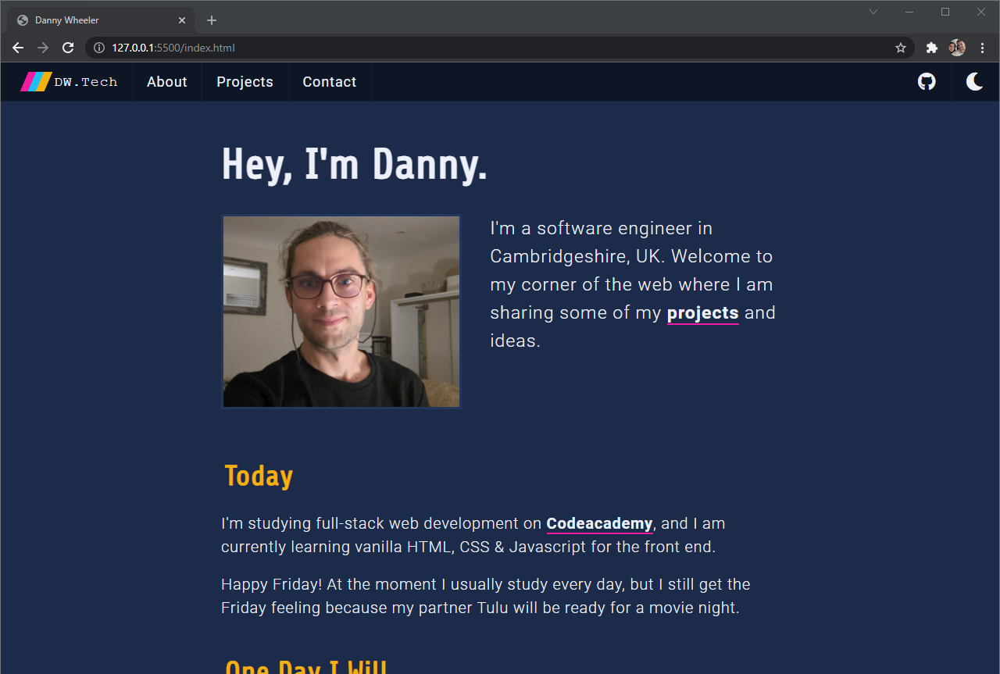
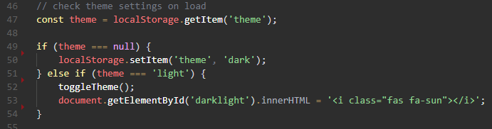

This is the first website I have created without using a service in nearly 20 years! Sadly I have no record of the one before, but I remember it having a cool banner image of Rey Mysterio colourised in blue. And it used an I-Frame to avoid repeated navigation code... unlike this website.
But the repetition was intentional here, because I was limiting myself to vanilla HTML, CSS and JS and wanted to keep things simple. Practicing the skills I'd learnt so far on Code-academy, only venturing out to figure out some simple form functionality.
My project objectives were to:
- Make it responsive.
- Include some form of JavaScript interactivity.
- Include some dynamic content.
- Use Git version control.
Responsive
The majority of the responsive behaviour on the website was simple to implement and I decided to limit the media queries to max-width: 650px for extra simplicity. I fiddled with some display options for the index and projects pages to create a single column layout on smaller screens.
The most difficult element to restyle for smaller screens was, without doubt, the navigation bar. On the full page design the logo and page links are to the left of the bar and a couple of 'toolbar' buttons are to the right of the bar. The navbar has a flex display and the toolbar buttons are grouped in a div with margin-left: auto; applied to keep them to the right.
On smaller screens I wanted the page links to drop to a second row but to leave the toolbar buttons and the logo on the top row. It seemed like the neatest way to display the elements on a small screen without resorting to a burger menu. Searching the MDN docs, I found the order: property. With this, I reorder the elements so that the group of page links are after the toolbar buttons and use flex-basis: 100%; to force a new row.
JavaScript Interactivity
I'm a huge fan of dark mode on my devices and spend most of my time set to dark. So I wanted to learn how to implement a dark mode for myself.
In decided to tackle the problem on my own without finding a ready made solution, and I'm sure it is more code and less efficient as a result, but it was a good learning process!
First I added the elements that need re-styling to an array.
Then I made a function toggleTheme() that simply loops through the elements within the array and uses the toggle() method of the classList property. In my stylesheet, each element in the array has a corresponding .light class, which is added or removed (toggled).
This works great for the current page, but when you navigate it would switch back to the dark theme. I needed to store some information, but couldn't simply do this within a javascript variable, because the js document is freshly loaded along with each new page. So instead, I used the localStorage property to create a key value pair that saves the current theme setting.
The added benefit of using localStorage (as opposed to sessionStorage), is that the setting will generally persist until a user clears their browsing data or cookies.
The final piece of the puzzle was changing the font awesome icon on the button from a moon to a sun when the dark mode is toggled, which I did by editing the .innerHTML property.
Dynamic Content
I wasn't looking for anything fancy here. I just wanted to practice changing the content of the HTML using JavaScript. My index page contains a Today section, where I talk about what I'm currently doing, be that employment or study wise. And the simple idea to add some dynamic content was to add what I am typically doing on the current day of the week, to add a bit more personality.
Here I've used the built in javascript date class to create a new date object. This has a getDay() method i'll use, which returns an integer between 0-6 corresponding to the day of the week (where 0 == Sunday). But first I created an array of messages where each items index corresponds to the day of the week they relate to.
All that remains is to use the getDay() method to assign the right message to some HTML code. Then insert that code into the element on the index page.
Summary
So that about sums up this project and the main pieces of information I wanted to have stored for future reference. The source-code is viewable on my GitHub, but as it's my live portfolio website, I expect it will change over time and may not completely reflect the contents of this article.